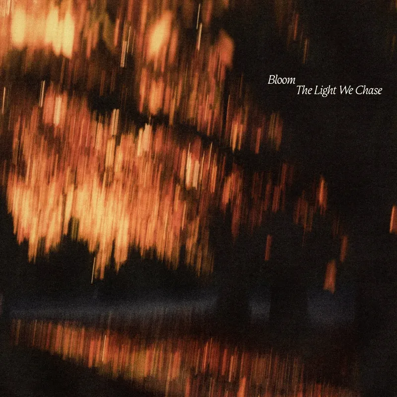
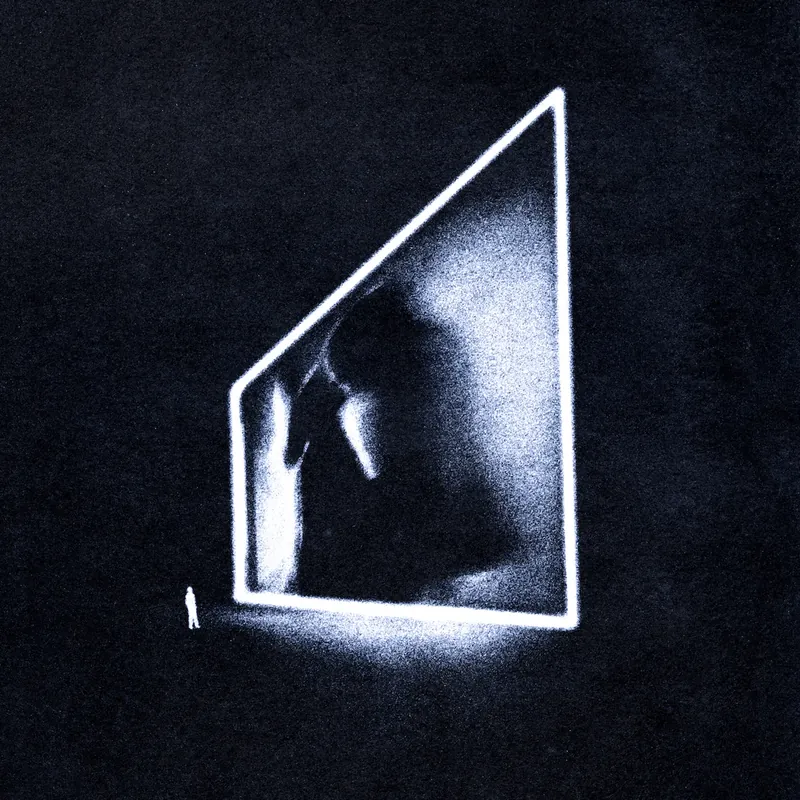
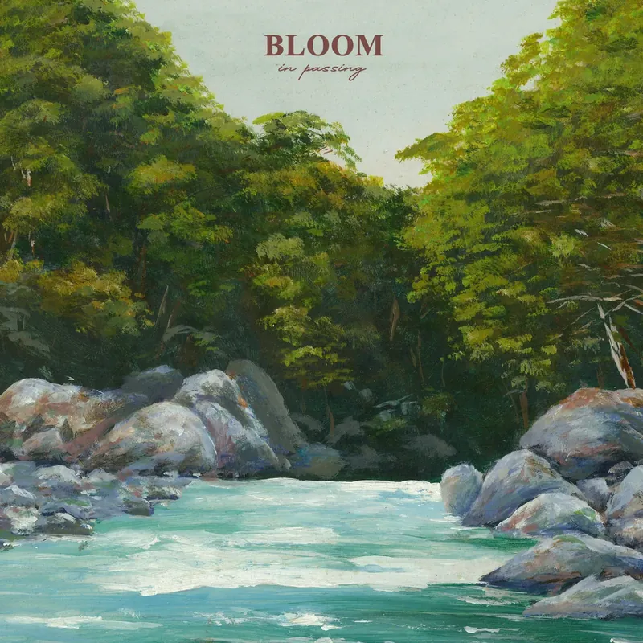
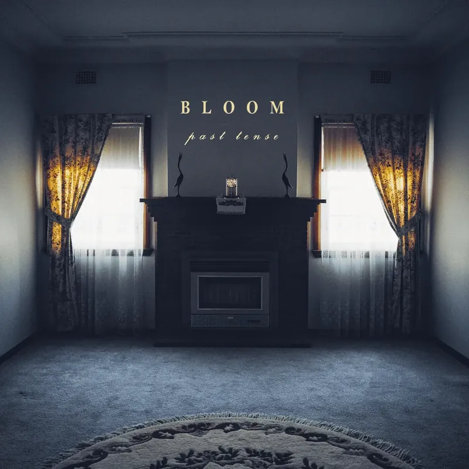

Discography / 2017 - 2026
Music
Two albums, two EPs and a run of singles, with the full tracklist for every release.
Albums and EPs

Album / 2025
The Light We Chase
Bloom's second album, recorded in a few weeks with producer Sam Bassal. It has guest vocals from Patrick Miranda, Jack Bergin and Mikaila Delgado.
- 01 Belrose 1:49
- 02 Forget Me Not 3:43
- 03 Out Of Reach 2:49
- 04 Keep You (feat. Patrick Miranda) 3:10
- 05 Glen Street 4:02
- 06 Life Moves On Without Us 3:05
- 07 Act II (feat. Jack Bergin) 2:52
- 08 Withered 3:40
- 09 Only Sky 2:38
- 10 Tongue Tied (feat. Mikaila Delgado) 3:28
- 11 Show Me Who I Am 3:18

Album / 2024
Maybe In Another Life
The debut album, and the record that pushed Bloom's choruses into bigger rooms. Ten songs that move between hardcore weight and wide melodic parts.
- 01 An Entry 1:06
- 02 Maybe In Another Life 3:37
- 03 Siren Song 2:23
- 04 Bound To Your Whispers 3:14
- 05 Carve Yourself Into My Lungs 2:32
- 06 You & I 3:50
- 07 Fragments Of A Dream 4:34
- 08 Laughing Stock 1:10
- 09 An Exit 3:10
- 10 Through The Threshold, Beyond The Bend 3:58

EP / 2020
In Passing
Five songs about grief, written from the outside in. This was the EP that brought Bloom to a wider audience.
- 01 The Service 3:14
- 02 The Boat And The Stream 3:06
- 03 Daylight 3:12
- 04 June 3:33
- 05 In Passing 2:59

EP / 2018
Past Tense
The first Bloom EP. Five songs about a break-up in a shared house, and the version of someone you used to know.
- 01 Home Felt Better With You 1:58
- 02 Who You’ve Become 2:11
- 03 Past Tense 2:45
- 04 Phantom Pain 2:57
- 05 Closure 2:48
Singles
Songs released on their own, between the albums.
- The Works Of You (2024)
- Ceilings (2024)
- Sink Into The Soil (2022)
- Cold (2019)
- Cure Me (2017)
Bookings
For shows, interviews or anything else, contact the band directly using the addresses below, or use the form on the home page.
- Booking booking@bloomband.com.au
- General enquiries hello@bloomband.com.au